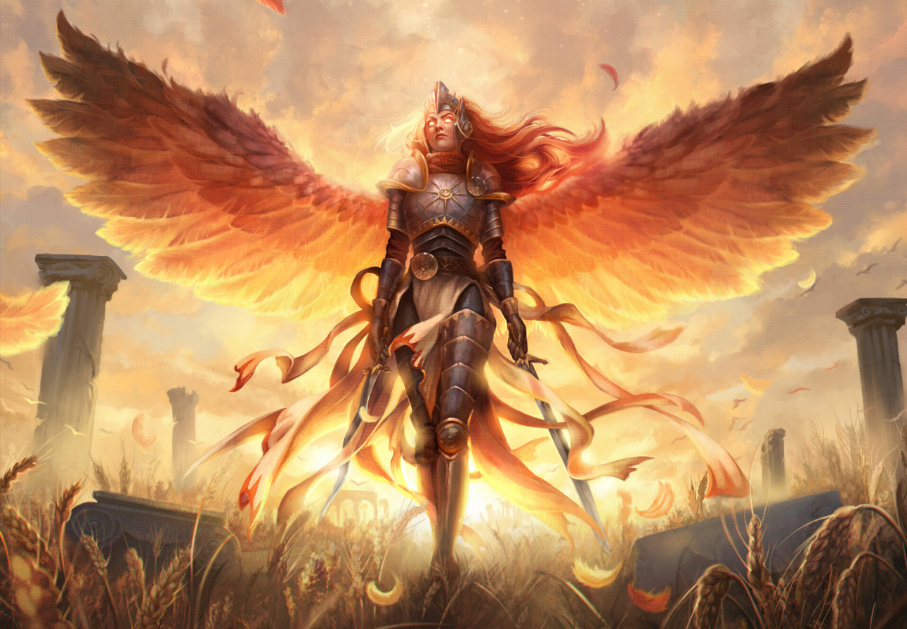

Fuoco, sole, purificazione
Rappresentata come un umanoide alato, le ali sono rosse così come i capelli e
gli occhi emettono luce solare.
Indossa un'armatura che irradia calore sul cui petto è raffigurato il suo simbolo, un sole con 7 raggi e impugna due spade lunghe.
Venerata in lungo e in largo
Seconda divinità creata da Yturd,